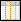
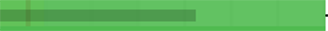
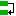

Planning¶
The Gantt chart is a tool used in scheduling and project management and allowing to visualize in time the various tasks composing a project.
It is a representation of a connected graph, evaluated and oriented, which makes it possible to graphically represent the progress of the project
Gantt chart¶
This screen allows to define projects planning and follow progress.
The Gantt Chart is composed of five areas:
Gantt (Planning)


Toolbar¶
Gantt chart’s toolbar
Interface areas


{kind=link}
 Show Critical path
Show Critical path
The critical path allows you to determine the total duration of your project. This is the longest sequence of tasks that must be completed for the project to be completed on time.
The Critical Chain, meanwhile, is a technique for planning and monitoring deadlines but has the same principle: take into account the constraints to determine the duration of the project and the critical tasks that may impact this duration. One of these constraints is the taking into account of resource or skill limitations in addition to the dependencies between the tasks and the implementation of buffers, i.e. time reserves, in the critical chain and the secondary chains.
ProjeQtOr offers you a critical chain rather than a critical path, but for better understanding, the term Critical path has been retained.
- click on the critical path check box to calculate and display the red path in the Gantt schedule.

The red net represents the critical path of the project.
Note
The tasks of the project which are not crossed by the critical path are elements which will not affect the duration of the project and, even modified, will not automatically involve a modification of this duration for the entire project.
 Activity planning calculation
Activity planning calculation
Click on to start the activity planning calculation.
A popup window appears with the list of projects. The check boxes allow you to select one or more projects to recalculate.
Project selection popUp for project calculation
If you have selected one or more projects with Project Selector then the selected projects will be automatically checked.
Choose the date on which you want to recalculate the project. Whether in the past, today or in the future.
By checking the “Hide unselected projects” box, you will only have the projects selected in the project selector and they will be automatically checked.
Automatic run plan
Check the box to activate automatic calculation on each change.
Warning
Only works on the Gantt Planning view. If the modification of an element is carried out on the dedicated screen of the element, then it is necessary to click again on BUTTON to restart the computation
Note
All modifications about assignement (rate, name or numbers of resources, dates...) done are not displayed on the new planning screen until having, for this purpose, activited the planning calculation, either in an automatic run plan or not.
On the contrary, the screen planning will not change even if modifications have been loaded yet.
Automatic calculation
Differential calculation = calculation of projects that require a recalculation.
Complete calculation = calculation of all projects
The calculations are programmed according to a frequency of CRON type (every minute, every hour, at a given hour every day, at a given time on a given week day, ...)
See: Global Parameters into the chapter Automatic planning Calculation
 Display from... to...
Display from... to...
Change the start and / or end date to limit or extend the display of a Gantt Chart.
If the display is truncated because the project is too long, think to change the display scale.
all the projet
Check All the project for the Gantt chart to show all project tasks when possible.
Saving dates
Save your dates of display to retrieve them on every connection.
 Planning validation
Planning validation
Allows you to replace the validated dates with the planned dates.

Store planned dates
With this approach, you validate in a way any possible delay on the activities of your project.
Two actions are available: Always or if empty.
Always
will overwrite existing values.
If values are entered in the “validated” fields then, they will all be replaced by the planned dates (calculated by the software)
If empty
will not overwrite existing values.
If the “validated” fields are not completed, then these dates will be replaced by the planned dates.
If the “validated” fields are completed then they will be kept.
 Save and show baseline
Save and show baseline
The baseline is a record of the planning state at a time T.
Save a baseline
You can create as many baselines as you want per day, but you can only save one baseline per day. Each new baseline must replace the previous one.
Save baseline
Saved a baseline with the button
.
Enter the project on which to create the baseline. The list of existing baselines, already registered, is available via this window. You can modify your baseline or delete it to save another one.
Record baseline
Show baseline
You can display two baselines at the same time. The one above the current activity bars of your project. The other below.
Each of them has a different color, pale blue for the top line and pale purple for the bottom line
Display two baselines
This option will be very useful for you to compare possible drifts and explain them.
 Print and Export the Gantt chart
Print and Export the Gantt chart
You can print directly on your printer or export in PDF format or in MS Project format
Print planning
Click on the button
to print the Gantt chart in A4 and / or A3 format.
The print quality, despite printing or exporting on a reduced scale, remains very qualitative and offers very little loss of detail in the diagram.
Export planning to PDF
Allows to export planning to PDF format. Export can be done horizontally (landscape) or vertically (portrait) in A4 and / or A3 format with great detail even with a zoom
Export contains all details and links between tasks and also include a pagination.
And the option Repeat Headers allow you to print or export your planning in multiple pages
Export planning to PDF
This feature will execute export on client side, in your browser. Thus the server will not be heavy loaded like standard PDF export does.
It is highly faster than standard PDF export.
Warning
This technically complex feature is highly dependent on the browser and is not compatible with all of them. It is compatible with the latest versions of IE (v11), Firefox, Edge and Chrome. Otherwise, the old export function will be used.
Tip
Forced feature activation/deactivation
- To enable this feature for all browsers, add the parameter $pdfPlanningBeta=’true’; in parameters.php file.
- To disable if for all browsers, add the parameter $pdfPlanningBeta=’false’; Default (when $pdfPlanningBeta parameter is not set) is enabled with Chrome, disabled with other browsers
Export planning to MS Project
You have the option of exporting XML in MS Project.
Click on the button
to start the export.
A user parameter allows you to enter if you want to add the assignments when exporting the project to MS-Project format.
If not, the name of the resources will not be available in the MS-Project application
See: User Parameters into the chapter Tab Export
 Add a new planning element
Add a new planning element
- Allows you to create a new planning element.
- The element is then added under the previously selected element and with the same level of incrementation
- The element is added to the Gantt chart and the detail area adapts to the content created.
- The details area allows you to complete the entry.

Popup menu - Create a new item
You can create several elements on the planning view and more on to the Global planning.
 Advanced Filter
Advanced Filter
The advanced filter allows to define clause to filter and sort.
For more explanation and understanding of the mechanism of advanced filters, see the chapter on filters in the graphical user interface.
{kind=link}
This functionality allows to define columns displayed in the list for this element.
For more explanation and understanding of the mechanism of advanced filters,
see the chapter on Display the columns in the graphical user interface.
 Checkbox for display
Checkbox for display
At the end of the first zone, you have the choice to display or not, certain information on the Gantt chart.
Show WBS
Click on “Show WBS” to display the WBS number before the names.

Task list without and with WBS Display
Closed
Flag on “Show closed items” allows to list closed items.
Resource
The Resource checkbox allows you to directly display the resources assigned to each activity on the Gantt chart.
Display of initials

Display of name
A parameter allows you to choose between displaying names or initials.
Choose if you want names, initials or nothing to appear on the Gantt chart
Setting the display of resources
Task List¶
The task list displays the planning elements in hierarchical form by dividing the WBS.
Tasks are regrouped by projects and activities.
The projects displayed depend on the selection made with the project selector
See: Project selector
Task list & progress data view
Interface areas:
and Hide activities
Show or hide project activities. Click on  or
or
- Click on the icons at the top of the list
to enlarge or reduce all groups of projects at the same time
- Click on the group line
to enlarge or reduce the group only
Icon of element
A specific icon appears to the left of each item type for faster identification.
 Project
Project- Project to recalculate (the Gant diagramm to display with the latest settings)
- Project under construction
- Projet fixed in the planning
- Activity
- Milestone
 Meeting
Meeting Test session
Test session
{kind=link}
{kind=link}
Other items can be displayed in the Planning global (action, decision, delivery...)
Reorder planning elements
The selector allows to reorder the planning elements.
Note
Ability to move multiple tasks at one time from one location to another using the key control to select the lines and then dragging and dropping them.
Item name
Click on a line to display the detail of the item in the detail area.
Increase and decrease indent level
Increase and decrease indent level
Indentation buttons
Increase indent
The element will become the child of the previous element.
Decrease indent
The element will be moved at the same level than the previous element.
Progress data view¶
The progress data view allows to show progress on project elements. to display the progress columns, pull the splitter to the right.
For each planning element, the progress data are displayed at them right.
Progress data view
Project group line
- The project and sub-project lines have a gray background.
- Used to display consolidated progress data by the tasks.
Task row
- The task row has a white background.
- Used to display task progress data.
The columns of datas
- Click on  to define the columns displayed.
- Use checkboxes to select or unselect columns to display.
- Use the
 to reorder columns with drag & drop feature.
to reorder columns with drag & drop feature. - Click on OK button to apply changes.
For more explanations and understanding of the mechanism on the display of columns,
see the chapter on Display the columns in the graphical user interface.
Gantt chart view¶
The Gantt chart view is a graphical representation of the progress data of a project.
For each planning element, a bar is associated with it
Gantt chart view
Scale
Scale available: daily, weekly, monthly and quarter
The Gantt chart view will be adjusted according to scale selected.
Gantt chart’s bars
The bars displayed in the gantt chart can appear with different colors. Each color has a meaning.
Current date Bar

Current date bar
Yellow column indicates the current day, week, month or quarter, according to scale selected.
The red line in yellow collumn display the current day and time.
PALE GREEN OR RED BAR

no charge
Condition : Activities without assigned work - pale red or pale green as appropriate
GREEN BAR
all is well
Condition : Assigned resources are available and meet workload, validated or scheduled dates do not conflict with other items
RED BAR

Overdue tasks
Condition: Planned end date > Validated end date - Real end date if completed task > Valited end date
PURPLE BAR
Impossible to calculate the remaining work
Condition: If a resource is not or is no longer available on an activity.
The calculator is trying to plan the workload. The resource assigned to the activity is unable to be planned for this task (absence, calendar, assignment or assignment periods, etc.); then the bar turns purple.
SURBOOKING BAR

Resource capacity overbooking
Condition: Add extra work time on the standard capabilities of your resources to plan more projects that you will not process.
For more information see: Managment of surbooking periods
SURCAPACITY BAR
Overcapacity of resources
Condition: The capacity of the resource has been changed. It can be under capacity or over capacity. That is to say, it does less or more than its FTE.
For more information see: Variations in resource capacity
REAL WORK IN PROGRESS
Work in progress
Condition: the length represents the percentage of completion based on the actual progress versus the length of the Gantt bar.
CONSOLIDATION BAR
Consolidation Bar
Condition: graphical display of the dates consolidated by the group of planning elements for a project

item name and scheduled dates on the selected bar
Move the cursor over the bar to display item name and planned dates.
Dependency links
Dependencies allow to define the execution order of tasks (sequential or concurrent).
All planning elements can be linked to others.
Dependencies can be managed in the Gantt chart and in screen of planning element.
Dependencies between planning elements are displayed with an arrow.
Create a dependency
To create a dependency, left click on a bar of the gantt (the predecessor) and slide towards the successor.
You can also create dependencies with the predecessor and successor tables at the bottom of the details area.
Remember than the first task always drives the second.

Predecessor and Successor section - In the NAME field, icons are displayed to indicate the type of dependencies
- Click on
on the corresponding section to add a dependency link.
- Click on
to edit the dependency link.
- Click on
to delete the corresponding dependency link.

Dialog box - Predecessor or Successor element
Modify a dependency
Click on the arrow which turns orange, a pop up is displayed allowing you to modify the type and one to add a possible delay.
The delay can be positive or negative. Negative delay allows overlapping of certain tasks
See the strict mode of dependencies

Dependencies dialog box
Dependency types
End-Start
The second activity can not start before the end of the first activity.
Start-Start
The successor can not begin before the beginning of the predecessor. Anyway, the successor can begin after the beginning of the predecessor.
 End-End
The successor should not end after the end of the predecessor, which leads to planning “as late as possible”.
Anyway, the successor can end before the predecessor. Note that the successor “should” not end after the end of predecessor, but in some cases this will not be respected:
- if the resource is already 100% used until the end of the successor
- if the successor has another predecessor of type “End-Start” or “Start-Start” and the remaining time is not enough to complete the task
- if the delay from the planning start date does not allow to complete the task
Strict mode for dependencies
- ..figure:: /images/GUI/PARAMGLOB_ZONE_ModStrict.png
alt: Strict mode for dependencies Strict mode for dependencies
The strict dependency mode is a global parameter in the work tab, planning section.
By default, the strict dependency mode is set to YES.
The strict dependency mode forces the successor planning element not to start on the same day as the same predecessor but the next day. Even if the task is finished before the end of the day.
To have the successor start on the same day or before the end of the predecessor task, select NO for strict mode or you can also put a negative delay.
Milestone
Milestones appear as small diamonds. Filled if completed, empty otherwise.
Color of diamond depends on milestone progress.
Ongoing milestone and in times

Completed milestone and in times

Ongoing milestone and delayed
Planned end date > Validate end date

Completed milestone and delayed
Real end date > Validated end date

Real work
Detail of the work
Right click on a bar to displays the detail of the work for this bar.

Display details of the work
Warning
You have to selected week or day scale to display detail or a message will ask you to switch to smaller scale.
Details area¶
The details area is the same as on all the ProjeQtOr element screens and adapts according to the selected element.
For more details on this area, see the chapter Details window in the Graphical User Interface
Planning global¶
Global planning
The global planning allows to create and visualize any type of element (project, activity, milestones, risk, meeting, action ...)
- Add and Show any new planning element on Gantt chart
- The created item is added in the Gantt and detail window is opened.
- The detail window allows to complete entry
- Project planning and activity planning calculation can be done in the Gantt.

Create a new item
Projects portfolio¶
This screen displays only the projects on the diagram. The activities and other elements that make up the schedule are hidden.
It displays summary and project dependencies only.
Note
This section describes specific behavior for this screen. All others behaviors are similar to Planning global screen.
Gantt (Projects portfolio)
Show milestones
Ability to display milestones or not.
If they are displayed, it is possible to define the type of milestone to display or to display them all.
All milestones are available: deliverable, incoming, key date...
Resource planning¶
This screen displays the Gantt chart from a resource perspective.
The assigned tasks are grouped under the resource level.
Regarding resource planning, periodic group meetings are under his responsibility
Ability to view assigned activities without charge
Gantt (Resource planning)
Interface areas
Show project level
Tasks are grouped by project.
Click “View Project Level” to view the projects on which resource activities depend.
Below the two views with and without “View Project Level”

view with project levels and without project levels
Gantt charts for resources
The remaining work can be displayed to the right of the Gantt bar..
Click “Show left work” to display or not the duration of the rest to be done.
Limit display to selected ressource or team
Click and select one ressource to display only his data.
Click and select one team to display only data of resources of this team.
Click and select one organization to display only data of resources of this organization.
show activities without work
View activities without assigned workload.
These activities then appear in the list box and on the Gantt chart in light color, as for standard planning.
The software takes into account the validated dates for display on the diagram.
Show left work
The bars used in the Gantt chart for resources differ slightly from the standard planning bars.
Work bars
Most of the bars used in the Gantt chart are the same as for standard planning.
You will find their meaning in chapter 2 of the Gantt chart view: Gantt chart’s bars.
GREY BAR
all is well
Condition : Assigned resources are available and meet workload, validated or scheduled dates do not conflict with other items
Real work in grey.
Left work in green or in red.
See: Gantt Bars
The gray bar in the middle graphically represents the actual percentage progress relative to the total duration of the activity
Note
This makes appear some planning gap between started work and reassessed work.
Dependencies behavior
Links between activities are displayed only in the resource group.
Links existing between tasks on different resources are not displayed.
Note
This section describes specific behavior for this screen.
All others behaviors are similar to Planning global screen.
GREEN BAR
all is well
Condition : Assigned resources are available and meet workload, validated or scheduled dates do not conflict with other items.
Add a new activity
Depending on your profile and your rights, you can add an activity directly in the schedule by resource.
You must select an existing activity to insert the new activity into the WBS structure. If no activity is selected, the “add new item” icon will be grayed out.
The new activity is automatically inserted after the selected activity. It is then created under the same project as the activity selected during creation.
Advanced filters
Click on the icon to define an advanced filter.
The advanced filter allows to define clause to filter and sort.
Fore more details, see Advanced filters in the Graphical user interface section